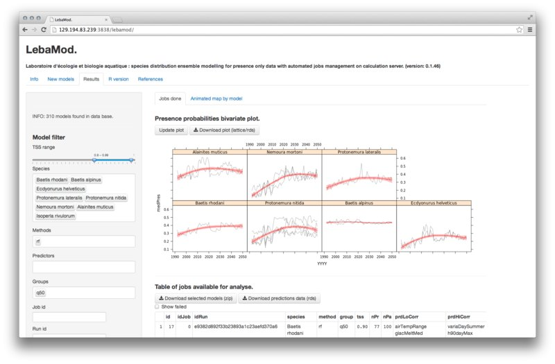

archived project's page, apps discontinued
LebaMod is an application to manage presence only species distributon modeling using random pseudo-absences generator, multiple classification methods, SQLite databases and calculation server. The web application is made with R/Shiny.
- Input : one simple SQLite database with 2 tables : species observation (sp,year,x,y) and predictors at the same spatial extent. This simple structure has been set to be easily replaced by another species and environmental data base. Indexation, cache, summary is done the first time LebaMod is linked to the new data.
- In this case, predictors table represent 40 yearly hydrological, geomorphologic and climatic variables, from 1992 to 2050, partially based on multiple stochastic regional climate models (9e09 fields).
- Hundred of statistical classification methods are available through caret package.
- Jobs pending list procedure : a calculation server is connected to this application and compute models as soon as the last jobs is finished. Currently, the server is a 60 CPU cores (AMD 2.8 GHz) centOS machine.
- Email support : when a job is done, a mail is sent to the user. The same email can be provided to retrieve models in results section.
- Description and summary tabs automatically updated for selected methods, parameters, predictors and species
- Many parameters can be set in background scripts and configuration files.

- Results are available to download, along with predictors data used as input and caret object summary.
- Database filtering is done in real time and give an overview of main results. Others statistical performance indices (kappa/spec/sens/auc) and many more informations are available in downloadable R list
- Code is available as a git project. If your are interested in development, mail me at f at fxi.io (f at fxi dot io) !
TODO: Add animated map of prediction for a selected model. As it was not required by the initial project, this part has been left behind, but the code exists. Here is an example of output
HexDim is an application developped to extend results exploration of my master thesis. It provides a hexagonal grided map that display probability of presence for selected species, based on the output of the model that maximise TSS value during 2 times 10 cross validations process. Each model was fitted using caret with multiple tunning parameters set. Caret summary are also displayed in method and parameters tab. Output data are available to download for extended analysis.